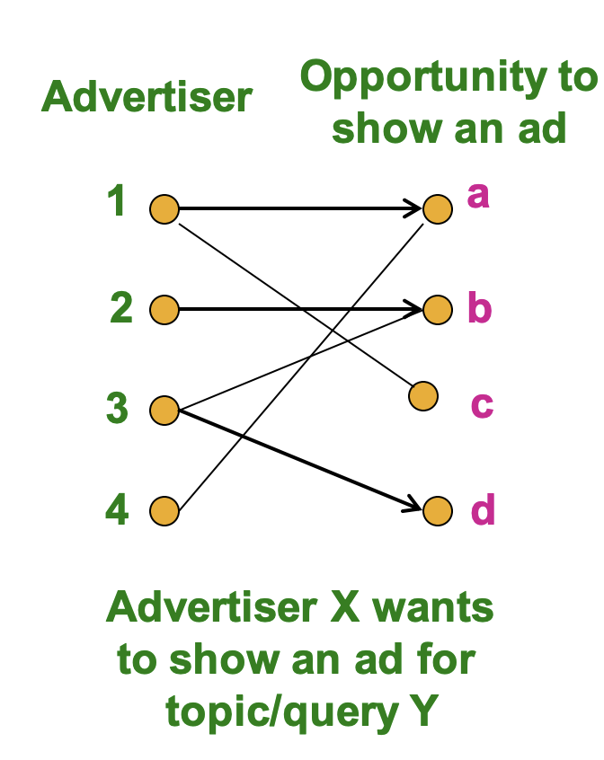
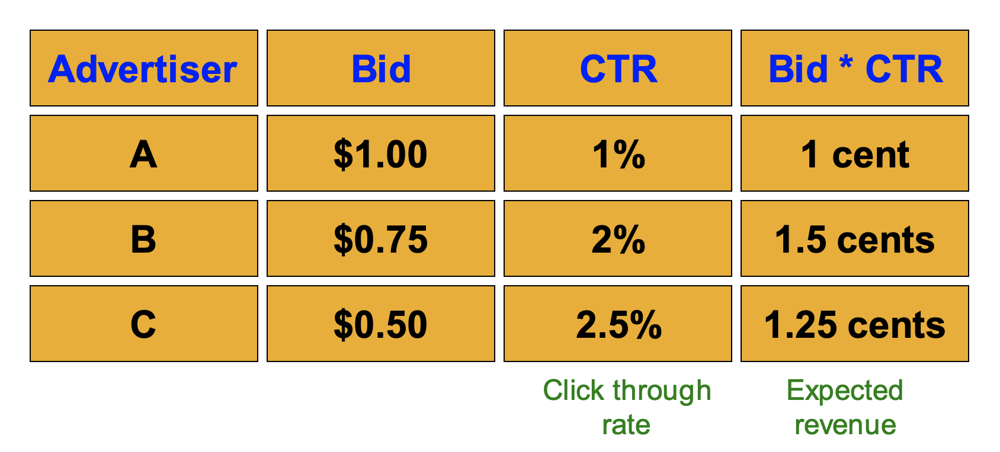

海量数据挖掘3：计算广告学和流数据挖掘
计算广告学
早期广告算法
互联网中的广告是非常常见的，而广告也可以使用推荐算法进行推荐，常见的广告算法往往都是“在线算法”，即算法不是直接获得所有的输入数据，而是逐渐接受输入数据并作出及时的决策，一次性得到所有数据并建立模型的是离线算法。
传统的广告算法可以看成是一个图匹配的问题，一个图中一部分节点是广告商而另一部节点是投放广告的时机，我们需要给每个广告商X找到合适的时机来投放广告，这是一个在线问题，我们需要对出现的查询结果进行针对性的广告投放，并且不知道下一个用户会查询什么东西。

在线二部图匹配
我们可以进一步将问题转化成一个二部图的匹配问题，举个例子就比如相亲网站上的男女嘉宾匹配(这也可以看成是一种广告)，我们假设男的只能和女的匹配，这样一来图就被分成了男节点和女节点两部分，俗称构成了一个二部图，我们需要找到尽可能合适的匹配，让更多的男女嘉宾牵手。关于二部图的匹配有如下几个定义：
- 完美匹配：图中的所有节点都被匹配了
- 最大匹配：包含了最多可能数量节点的匹配
广告推荐的目标可以认为是找到给定二部图的最大匹配，对于这个问题已经有多项式复杂度的算法被提出了，但如果我们如果不能在前期知道所有的节点，又该怎么办呢？(比如新的男嘉宾和女嘉宾注册了账号)
一种情况是，一开始给出了所有的男嘉宾，而每一轮都会有女嘉宾给出自己的选择(即给出和一个男嘉宾连接一条边的倾向)，下面我们就要靠谱是否给这个女嘉宾分配一个男嘉宾，对此我们可以使用贪心算法，一旦有满足条件的男嘉宾就立马进行匹配，如果没有就算了，不需要考虑节目效果，我们假设贪心算法给出的匹配是$Mg
基于点击率的广告
最早的互联网广告是banner ads，通常用CPM(cost per 1000 impression， 每一千次曝光需要的收益)来考虑广告的成本，但是这种广告效果往往不好，点击率非常低。
而另一种互联网广告投放的方式在2000年左右被提出，这种方式使用用户的搜索关键字来进行精准的广告推送，并且广告的计费方式变成了按照用户的点击率(CTR)来计费，Google将这种算法总结成了Adwords，这种广告方式被称为performance-based advertising，现在广告系统的目标就变成了最大化广告带来的收入，即最大化点击率，我们可以用单次点击的期望收入来简化这个问题。

但是又有这样几个问题：
- 广告的点击率可能是未知的，需要通过历史记录计算或者进行预测
- 广告的投放有预算限制，因此bid不能超过总体支出
BALANCE算法
下面主要介绍一种能解决上述问题的BALANCE算法。
问题描述
我们将问题的条件概括为如下几条内容：
- 广告商给出了需要投放的广告内容，并且有每个广告的收益数据
- 每个广告-查询的二元组有一个点击率数据
- 广告的投放有一个总预算上限
- 对于每一条查询有一个广告投放数量的上限
我们可以将问题简化成：
- 对于每一个查询都要有一个对应的广告投放结果
- 广告商的总预算记为B
- 所有的广告被点击的可能性是相等的
- 所有广告产生的商业价值是相等的，都是1
贪心算法及其局限性
最简单的解决方案就是使用贪心算法，对于每一个查询都给出一个受益为1的广告作为结果，根据上面的结论贪心算法的投放效果不会低于最优解的1/2
但是在特定场景下贪心算法的表现会达到下限，因为贪心算法对于冲突的查询总是采取不变的投放策略(比如A和B广告都可以在查询x的情况下投放，使用贪心算法可能就会一直投放A)
而BALANCE算法解决了这个问题，对于每一个查询，该算法会给出能剩下最多预算的解决方案，可以随机地解决可能出现的tie，对于上面这种情况，贪心算法给出的结果是AAAAAAAA，而最优解是AAAABBBB，BALANCE算法给出的结果可能是ABABBBBB，相比于贪心算法，近似率更加提高了。
算法具体分析
- 仔细看了看感觉BALANCE算法也是一个传统算法，没什么令人惊奇之处，就不仔细分析了，给出一个结论那就是BALANCE算法的近似率是
数据流挖掘
数据流
在很多数据挖掘的场景下，我们并不会预先知道所有的数据集，而是一段段接收到需要处理的数据，这种形式的数据又叫做数据流，而数据流的管理也是数据挖掘中一个很重要的话题，比如谷歌搜索引擎和推特的热榜，都需要面对数据流的场景，这种场景下我们可以认为数据是无限多并且非固定的，也就是说数据的分布情况可能会随着时间的变化而变化。
很显然一个数据处理系统不可能保存所有的流数据，并且流数据输入的速度也是不一定的，因此如何对流数据进行建模就变的非常重要。我们常说的SGD其实就是一个非常经典的流算法，因为SGD对于每个输入的样本都进行微小的梯度更新，这种方式在机器学习中也被称为在线学习，数据流挖掘需要解决的问题主要有：
- 从流中进行采样
- 基于滑动窗口进行查询
- 过滤数据集，筛选出所有符合条件的数据
- 统计不同元素的个数
- 找到出现频率高的元素
数据流挖掘的方法可以使用的应用场景有：
- 对查询流进行挖掘，比如搜索引擎
- 点击流挖掘，比如wiki统计最近一个小时内访问频率最高的页面
- 社交网络挖掘，推特热搜
- 传感器网络的通信数据挖掘
- 电话记录分析，IP包检测……
从数据流中进行采样
受限于存储空间，我们不能存储数据流中所有的数据，一个解决的办法就是采样，用采样得到的数据来代表整体，而采样问题可以分成下面两种：
- 采样固定比例的元素(比如1/10)
- 在无限的数据流输入中维护一个定长的随机采样
我们希望采样的结果的概率分布和数据流整体的分布基本一致。
定比例采样
定比例采样常见的场景有搜索引擎数据流等等，以搜索引擎为例，我们可以对一系列客户端的查询内容维持固定比例的采样，并从中分析出最近的搜索热点，很naive的采样方式是等间隔采样，比如要采样1/10的内容，那么就每隔10个采样一个，但是这种方法会导致在有重复查询的时候，采样得到的查询内容概率分布和实际概率分布不一致。
另一种方法是选择用户来采样，比如可以选取1/10的用户并将其所有的搜索查询作为采样结果
定长度采样
定长度采样要求不管数据流有多长，都保留固定个数的数据作为采样结果，一种可行的方式是Reservoir Sampling，包含如下几个步骤：
- 假设我们需要对数据流采样s个样本，首先保留数据流的前s个作为初始采样
- 然后在数据流已经有n-1个数据之后，对于第n个出来的数据：
- 用
的概率保留这个元素作为采样，否则就丢弃 - 如果保留了第n个新来的数据，就从已有的s个采样数据中随机替换掉一个
- 用
这个算法的合理性证明就略过了。
滑动窗口查询
滑动窗口是另一种处理了流数据的工具，就是在流中维护一个长度为N的窗口保留最近的N个元素，用这N个元素来估计整个流的性质，常见的任务有统计元素的个数，比如给定一个01流，用一个长度为N的窗口来估计最近的M个数字中有多少个1(M要大于N)
- 具体的就不深入探究了，这一部分内容感觉意义不是很大，更偏向于传统的算法了
数据流过滤
- 待补充
元素计数
- 待补充